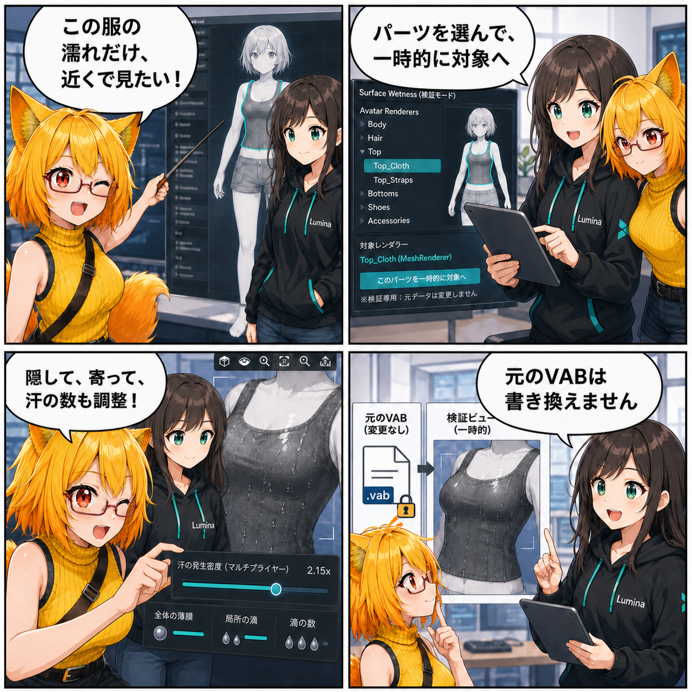

パーツを選んで、濡れの見え方をその場で追い込む
2026-08-14 の開発日記では、Surface Wetness（アバター表面の濡れ表現）を任意のアバター・パーツへ絞って確認しやすくする、進行中の検証環境改善を取り上げます。全身だけでなくRenderer単位で対象を選び、ほかのパーツを隠し、カメラを寄せ、汗の発生密度まで調整できる経路がViewer側の検証メニューへ組み込まれました。
main ブランチでは集計期間内のコミットは0件でした。一方、期間内の更新時刻を持つ未コミット差分について、実装ソースから内容を確認できたため、この記事では「進行中の実装」として扱います。4コマ内の会話や見せ方には読み物としての演出があります。集計期間は 2026-08-13 03:00:00 JST から 2026-08-14 02:59:59 JST までです。
集計終了時点の最終HEADは b6403ee（「残存するシーン設定とネイティブプラグインを追加」）で、対象コミットは 0件 でした。期間内に更新されたことを確認できた未コミット差分は、Surface WetnessのPlay Mode検証メニューとlilToon向け濡れシェーダーの2ファイルです。現在HEADとの差分規模は合計254行追加・21行削除でした。
今日の主題：見たいパーツだけを、すぐ検証対象へ
濡れ表現は、顔・肌・衣装など、材質や形が違う場所で見え方も変わります。全身表示のままでは、小さな水滴の輪郭やハイライトを追うたびに、対象を探してカメラを合わせる手間がかかります。
更新された検証ハーネスは、アバター内のRendererパスを列挙し、指定したRendererだけを一時的なWetness対象として準備できるようになっています。選択対象以外の表示をまとめて隠す操作や、全パーツを再表示する操作も加わり、確認したい場所へ視線を絞りやすくなりました。
元データを変えず、検証中だけ対象を切り替える
パーツ指定は検証中の一時状態です。対象Rendererのパスや一時的なSurface分類をハーネスへ渡し、VAB本体、Prefab、Material、元の分類結果を書き換えずにWetness用のデータを組み立て直します。検証の都合で衣装やアクセサリを対象にしても、保存データへその判定が残る仕組みではありません。
カメラ側にも、中ボタンドラッグでの平行移動、ホイールでのズーム、選択Renderer全体を収めるフォーカス処理が追加されています。Water Film調整パネル上ではカメラ操作を始めないよう入力範囲を分け、UI操作と画角調整がぶつからないようにしています。
汗の数と、全身の薄い水膜を分けて見る
調整パネルには汗の発生密度倍率も接続されました。全身に広がる薄い汗膜、局所的な水滴、発生数を別々に動かしながら、狙ったパーツを近距離で比較できます。
同じ期間に更新されたlilToon向けシェーダーでは、全身の水膜に対する反応を、主光源方向へ追従するハイライトと、視線方向で見える反射・わずかな暗化へ分離しています。局所水滴のFresnelや縁の反応とは別に計算することで、全身が一様に光るだけではない薄い水膜感を狙う調整です。
同じ期間に進んだこと
集計期間内に更新時刻を確認できた未コミット差分は上記2ファイルだけでした。作業ツリーには前期間から続くSurface Paintの自動UV生成、Preset、UI、テストなどの差分も残っていますが、当日の実装事実とは確定できないため、この記事の実績には含めていません。
4コマの裏話
4コマでは、ろひが衣装の一部分だけを詳しく見たいと頼み、ルミナがパーツを一時対象へ切り替えます。ほかのパーツを隠してカメラを寄せ、汗の数まで調整したあと、元のVABは書き換えていないことを確認する流れで、検証導線の狙いをまとめました。
今日のまとめ
濡れ表現の調整は、シェーダーの数値だけでなく「見たい場所へすぐ到達できること」も大切です。任意パーツの選択、表示の切替、対象へのフォーカス、汗密度の調整をひとつの検証経路へつなぎ、全身の水膜と局所水滴を見比べやすくする作業が進みました。
まだ未コミットの進行中実装ですが、元データを変えずに試行錯誤できる境界を保ちながら、見た目を追い込むための操作が具体化しています。
本日のひとこと： 見たい場所だけ、濡らして、寄って、確かめる。